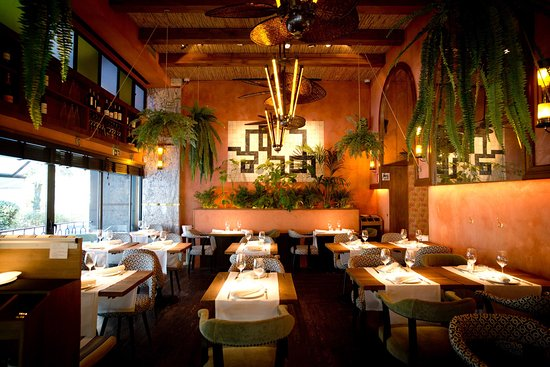

SOBRE NOSOTROS
En el corazón de Córdoba, una historia culinaria excepcional cobra vida a través del legado del Chef Genaro Rodríguez. Nacido en 1960 en esta ciudad de tradiciones arraigadas, Genaro abrazó desde temprana edad los matices de sabores y aromas que emanaban de la cocina de su hogar. Criado en un ambiente donde la cocina era más que una tarea diaria, era una expresión artística que unía a su familia, Genaro encontró en esta tradición la semilla de su pasión.

Después de completar sus estudios culinarios en Córdoba, su sed de conocimiento lo llevó a emprender un viaje que abarcaría continentes y horizontes culinarios. Desde los bulliciosos mercados de Barcelona hasta las cocinas refinadas de París, cada rincón explorado y cada sabor descubierto dejó una huella indeleble en su paladar y en su alma de chef. Cada plato, cada técnica culinaria aprendida en las ciudades europeas se convirtió en un pincelazo en el lienzo de su identidad culinaria en constante evolución. Tras años de exploración y aprendizaje, Genaro volvió a su amada Córdoba en 2010, con una visión clara y apasionada en mente. Fundó el restaurante "Don Rodríguez", un espacio donde la tradición y la innovación convergen en una danza armoniosa. Cada rincón de su restaurante cuenta la historia de su viaje: las paredes adornadas con fotografías de sus travesías, los platos en el menú, la misma atmósfera impregnada con el espíritu de la aventura culinaria. Al fusionar las técnicas que habían perfeccionado en Europa con los ingredientes autóctonos de Argentina, Genaro creó un puente entre dos mundos gastronómicos aparentemente distantes.
"Don Rodríguez" no se convirtió simplemente en un restaurante, sino en una experiencia completa. Cada plato que sale de su cocina cuenta una historia: la del joven apasionado que exploró el mundo a través de los sabores, el chef que volvió a casa con una visión audaz y la culminación de ambas en cada bocado que sus comensales disfrutan. El legado del chef Genaro Rodríguez no solo enriqueció el panorama gastronómico de Córdoba, sino que también dejó una marca imborrable en el tejido mismo de la ciudad, recordándonos que cada plato puede ser un portal para un viaje inolvidable.